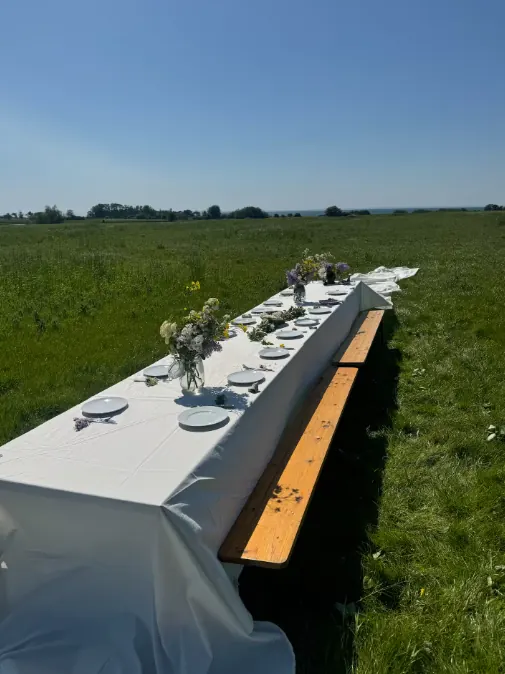

Sporene
Det, der sker på stedet.
Steven står for mandegrupperne og rites of passage. Lai står for den integrale praksis og skuespilmetoden. Resten laver vi sammen med dem, der er her.

Mandegrupper og rites of passage
Weekender for femten mænd. Vi laver mad sammen, arbejder nogle timer på stedet og mødes om aftenen i en talerunde, hvor hver mand taler uden at blive afbrudt. Steven har været i mandegruppemiljøet i ti år.
Retreats - vi er værter
Du kan holde dit eget forløb her. Hele stedet fra onsdag til mandag, plads til femogtyve overnattende, med eller uden mad fra køkkenet. Du står selv for indholdet.
Festival, burns og raves
Vi laver vores egen, og vi lægger plads til dem, andre arrangerer. Sal, køkken og seks hektar gør stedet brugbart til både festival, burn og rave. Steven var partner i og medskaber af Tribal Vibe.
Byg-med-uger
En uge, hvor du bor her, spiser med og arbejder på stedets opgaver. Vi går på værkstedet og i bygningerne sammen.
Stille uger og vinter
Et værelse og fred til at skrive, tænke eller holde fri i dit eget tempo. Du står selv for maden og for dagens indhold. Om vinteren kan et værelse lejes månedsvis.
Campingvogne
Plads til at bo i din egen campingvogn i perioder. Prisen afhænger af, om opholdet også omfatter en aftale om at arbejde med.